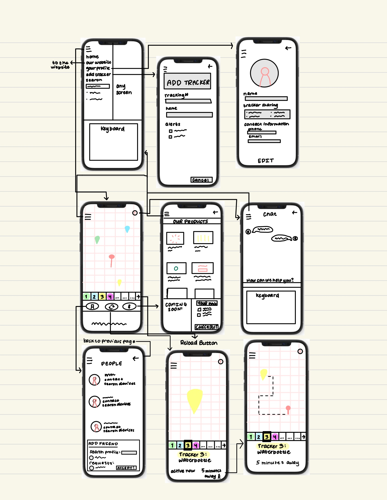
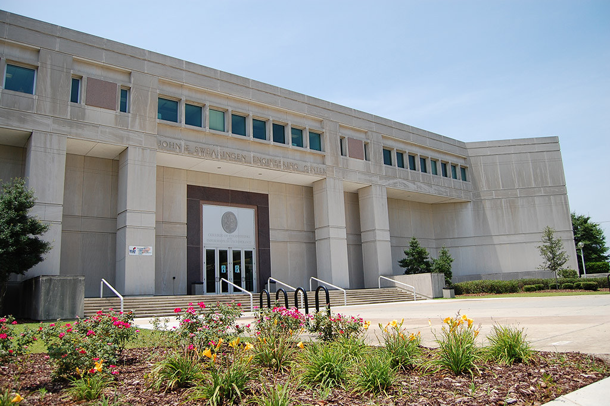

Problem Statement

While there are devices designed to track commonly lost items, there is not a practical way to track items not attached to a keychain or ring.
Affinity Diagram

Affinity diagram with 5 clusters and 21 ideas about everyday item trackers.
Sketches
The sketches show different scenarios of the ways different people may use and interact with the app. It shows examples such as a new user downloading the app and the tracking functionality.
Prototype

This is the paper prototype of the tracking app which demonstrates the app functionality.
Java code from CSCE146 Algorithmic Design 2
Java code for all homeworks and labs from retired course CSCE146.